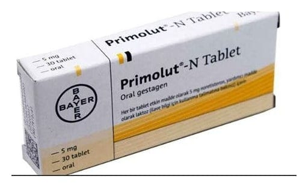

Primolut-N 5 mg Tablet, 30 Adet

Ne için kullanılır
KT · Bölüm 1• PRIMOLUT-N, 30 tabletlik ambalajlarda bulunur ve tabletler beyaz renktedir. Her bir tablet etkin madde olarak 5 mg noretisteron içerir. PRIMOLUT-N laktoz monohidrat (sığır kaynaklı) içerir. • Noretisteronun da aralarında bulunduğu progesteron grubu hormonlar, kadınlarda rahim iç tabakasındaki doku üzerine koruyucu ve kanamayı önleyici etki gösterirler. • PRIMOLUT-N, birkaç farklı durumda kullanılabilir: - düzensiz, ağrılı ve şiddetli adet dönemlerinde - rahim dışında rahim iç tabakası dokusunun bulunduğu durumlarda (endometriozis) - adet öncesi rahatsızlıklarda (premenstruel sendrom-PMS veya premenstruel tansiyon-PMT) - adet kanamasının (menstruasyonun) ertelenmesinde
Yeşil: CCDS 10 güncellemesi kapsamında yapılan değişiklikler Kırmızı: 31.05.2019 tarihli ve E.90426 sayılı yazınız gereğince yapılan değişiklikler 2/10